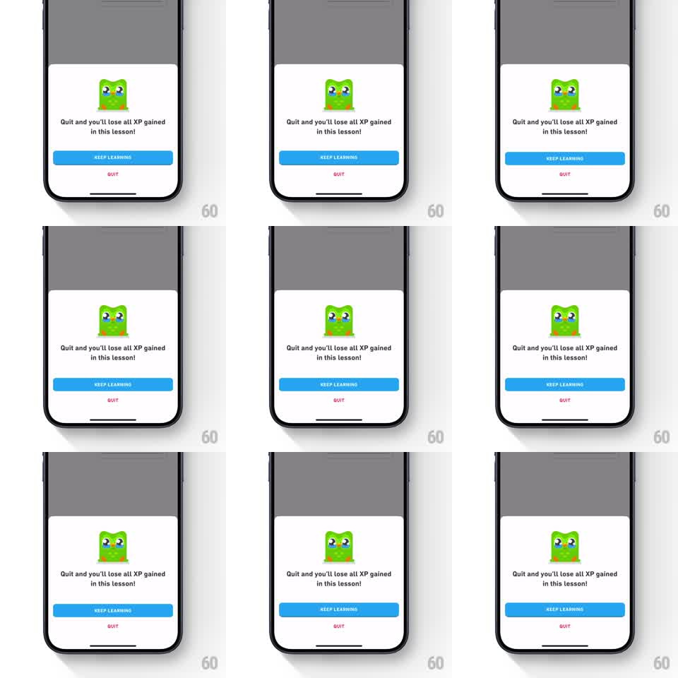

Media
Frame-by-frame

Rebuild this interaction 1:1: Duolingo's tactile 3D button - pressing "KEEP LEARNING" physically compresses the button's thick bottom edge, and the release springs the quit-warning sheet away.

Rebuild this interaction 1:1: Duolingo's tactile 3D button - pressing "KEEP LEARNING" physically compresses the button's thick bottom edge, and the release springs the quit-warning sheet away. ## Integration Integration: stack-agnostic spec - springs given as stiffness/damping, timed motions as duration + curve; map every value to your framework and animation library of choice. ## Scene A Duolingo lesson dimmed under a quit-confirmation sheet: a sad Duo illustration, the copy "Quit and you'll lose all XP gained in this lesson!", a full-width blue "KEEP LEARNING" button with a darker blue bottom lip giving it 3D depth, and a red "QUIT" text button beneath. ## Motion spec Pattern: tactile 3D press, ~600ms total. - On touch down, the button's face slides down over its bottom lip (translate 4px, 80ms, ease-out) - the lip shrinks from 4px to 0, the face taking its place; the button reads as physically depressed. - Held, the state holds. Released, the face springs back up (spring stiffness 500 damping 26) with a barely-there overshoot. - The release fires the dismissal: the sheet slides down off-screen (spring stiffness 320 damping 30) and the dimmed lesson brightens back to full (200ms). - The QUIT button takes the same press feel minus the lip: a fast darken plus 2px press. ## Calibration - The lip compression is the whole trick - the button face moves, the shadow-lip absorbs it. - No color change on the blue button; depth does the talking. ## Reduced motion Button darkens on press; sheet fades out. ## Don't miss - The bottom lip is a separate darker strip that visibly compresses, not a shadow blur. - The sheet dismissal is springy, not a linear slide.